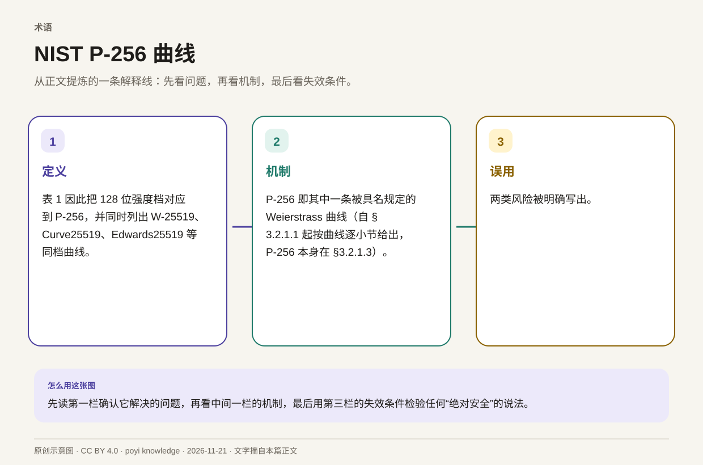

原理与机制
术语：NIST P-256 曲线（NIST P-256）。SP 800-186 用域参数定义每条推荐曲线：「Each recommended curve is uniquely defined by its domain parameters D, which indicate the field GF(q) over which the elliptic curve is defined, the parameters of its defining equation, and principal parameters, such as the cofactor h of the curve, the order n of its prime-order subgroup, and a designated point G on the curve of order n」，原文随后注明该点即「base point」。P-256 即其中一条被具名规定的 Weierstrass 曲线（自 §3.2.1.1 起按曲线逐小节给出，P-256 本身在 §3.2.1.3）。

为什么重要
强度来自基阶：§3.1.2 说明「The security strength of an elliptic curve is directly related to the order of the basepoint.In general, if an elliptic curve has a basepoint of order n, then the security strength will be approximately one half of the bit length of n」；表 1 因此把 128 位强度档对应到 P-256，并同时列出 W-25519、Curve25519、Edwards25519 等同档曲线。
应用与实例
表 2 规定 P-224 至 P-521 的允许用途为「ECDSA, EC key establishment」，并注明具体建立方案见 SP 800-56A；§1 说明本文件与 SP 800-56A 及 FIPS 186-5 配套使用（原文：「intended for use in conjunction with」），而 FIPS 186-5 §6 把 ECDSA 描述为「the elliptic curve analog of DSA」并把域参数生成指向 SP 800-186。
边界与攻击面
两类风险被明确写出。其一是曲线有效性：附录 C.1 要求每条曲线余子 h ≤ 2^10 且 |E| ≠ q 以避免异常曲线攻击，前部的符合性测试说明也称这些检查「essential for the prevention of subtle attacks」；§3.2.1.2 的脚注就相邻曲线 P-224 强调必须验证域参数，以防运算发生在其二次扭曲上，该警告在文中只就 P-224 写出，而同一文件在附录 D.1 给出了适用于各种曲线表示形式的公钥验证流程（D.1.1.1 第 3 步要求确认 (x, y) 满足定义方程），前部符合性条款也要求实现包含规范中全部密码学检查——所以只就 P-224 写出仅限这句脚注本身，不是文件对曲线有效性的整体要求。其二是强度上限：FIPS 186-5 §1 声明本标准算法「not expected to provide resistance to attacks from a large-scale quantum computer」，128 位档的 P-256 亦在此列。
历史与背景
SP 800-186 由 Chen、Moody、Randall、Regenscheid 与 Robinson 撰写，2023 年 2 月发布，编辑评审委员会于 2022 年 9 月 7 日批准；执行摘要说明本文件承接 FIPS 186-4 已指定的曲线，把二进制曲线标为弃用，并新增 Montgomery 与 Edwards 曲线；§3.2.1.1 则对 P-192 写明「This curve is for legacy-use only」，而 P-256 的 §3.2.1.3 没有这句；表 1 把 P-256 放在 128 位强度档。
逐步示例与核验
定义检查模型
上位概念 → 区别特征 → 正例 → 反例 → 易混边界。正例必须落在外延内；反例必须刚好跨过边界；同义词不能代替定义。
参考出处
- Wikipedia search entry for NIST P-256 曲线. https://zh.wikipedia.org/w/index.php?search=NIST%20P-256%20%E6%9B%B2%E7%BA%BF
- RFC 4949: Internet Security Glossary, Version 2. https://www.rfc-editor.org/rfc/rfc4949